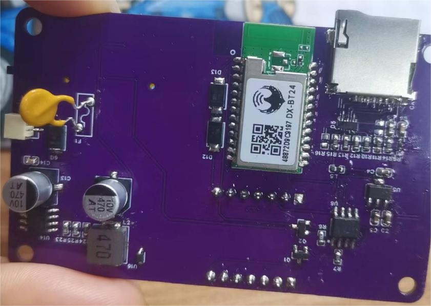
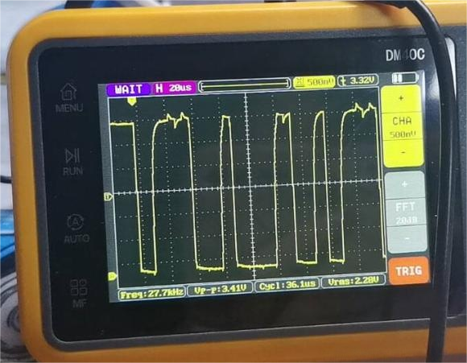
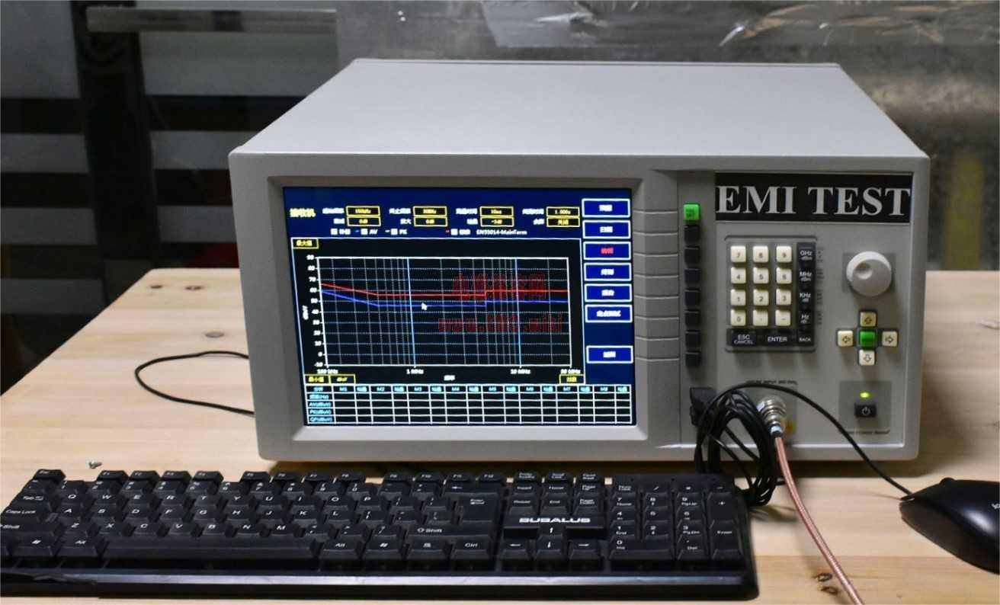

单板开发流程之单板测试
- 目视测试orAOI检测，观察单板有无明显的虚焊、连锡、阻焊层开裂等异常。重点检查右上角部分阻容器件密集排布的区域。

- 电源网络检测，从一次电源开始一直到各个芯片的供电端，观察电源轨是否正常上电，同时通过示波器等工具观察电源纹波是否满足要求。

单板功能检测，针对任务书中各项功能进行测试，观察是否符合指标要求。
可靠性测试，包含温循测试、老化测试、EMC测试。观察单板对环境变化的敏感度、使用寿命、电磁兼容性等特征。

电磁兼容性（EMC）测试详情
电磁兼容性（EMC）测试通常包括电磁干扰（EMI）测试和电磁抗扰度（EMS）测试两个方面。
1. 电磁干扰（EMI）测试
1.1 传导干扰测试
- 设备：需要用到频谱分析仪、电流探头等设备。电流探头可以夹在设备的电源线上，将电源线上的电流信号转换为电压信号，然后通过频谱分析仪来测量其在不同频率下的干扰电平。
- 方法：按照国际标准（如 CISPR 22、CISPR 25 等）规定的测试方法，将设备的电源线连接到相应的测试设备上。在设备正常工作的情况下，从低频到高频扫描，记录下不同频率点的干扰电平。例如，对于计算机设备，其电源线传导干扰的测试频率范围一般是从 150kHz 到 30MHz。如果在某个频率点的干扰电平超过了标准规定的限值，那么就需要采取措施来降低干扰，如安装滤波器等。
1.2 辐射干扰测试
- 设备：主要使用天线（如双脊波导喇叭天线、对数周期天线等）和频谱分析仪。天线用于接收设备在空间中辐射的电磁能量，频谱分析仪则用于分析这些能量的频率和幅度。
- 方法：将被测设备放置在屏蔽室内的转台上，天线放置在距离设备一定距离（如 3m 或 10m，根据标准而定）的位置。在设备正常工作时，转台会旋转，同时天线会在不同的高度（一般从 1m 到 4m 左右）进行扫描，以获取设备在各个方向和高度的辐射干扰情况。例如，在测试移动电话的辐射干扰时，会按照相应的移动通信标准（如 3GPP）来设置测试条件，记录其辐射干扰电平是否符合要求。
2. 电磁抗扰度（EMS）测试
2.1 电快速瞬变脉冲群抗扰度测试
- 设备：需要电快速瞬变脉冲群发生器。这种发生器可以产生一定频率（如 5kHz - 100kHz）和特定幅度（如 ±1kV - ±4kV）的快速瞬变脉冲群。
- 方法：将被测设备的电源线（或信号线）连接到脉冲群发生器的输出端，按照标准（如 IEC 61000 - 4 - 4）规定的测试等级和测试模式（共模、差模等）进行测试。在测试过程中，观察设备是否出现复位、死机、数据错误等异常现象。例如，对于一些工业控制设备，当受到脉冲群干扰时，如果其内部的微控制器出现程序跑飞等情况，就说明设备的抗扰度不足，需要在电源线或信号线上增加滤波、屏蔽等措施。
2.2 浪涌抗扰度测试
- 设备：浪涌发生器是主要设备，它可以产生幅值较高（如 ±1kV - ±6kV）、上升时间快（如 1.2μs/50μs 等）的浪涌脉冲。
- 方法：将浪涌发生器连接到设备的电源线或信号线，按照标准（如 IEC 61000 - 4 - 5）规定的测试参数（包括浪涌电压的极性、幅度、重复率等）进行测试。例如，对于建筑物的电力线路浪涌抗扰度测试，模拟雷击等产生的浪涌情况，观察电气设备（如照明设备、插座等）是否能够正常工作，不会损坏或者出现功能异常。
2.3 射频电磁场抗扰度测试
- 设备：射频信号发生器和天线是关键设备。射频信号发生器可以产生不同频率（如 80MHz - 2.5GHz 或更宽范围）和幅度（如 1V/m - 20V/m 等）的连续波信号，天线用于将这些信号辐射到空间中。
- 方法：将被测设备放置在屏蔽室内，天线按照一定的高度（如 1m - 4m）和距离（根据设备类型和标准而定，如 3m 或 10m）对设备进行照射。在设备正常工作的情况下，逐渐增加射频场强，观察设备在不同场强下的工作状态。例如，对于汽车电子设备，要按照汽车电磁兼容标准（如 ISO 11452 - 2）进行射频电磁场抗扰度测试，确保在车辆遇到外部射频信号（如来自广播电台、手机基站等）干扰时，电子设备能够保持正常运行。